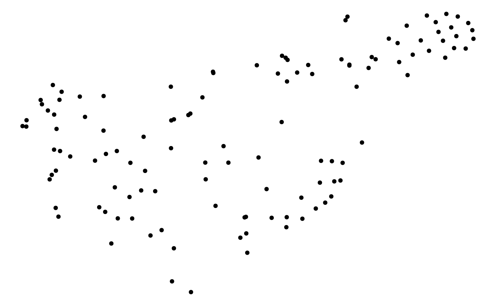

evently-profiling-users.RmdThis vignette gives a tutorial on profiling Twitter users with their initiated diffusions via modeling methods provided by evently. We use the dataset auspol shipped with evently in this task. It is a list of data frames (3333 in total) where each data frame represents a diffusion cascade. For each cascade, three fields are presented: time is the retweeting time relative to the original tweet (i.e., the first event); user is the corresponding Twitter user of the event; magnitude is the number of followers the Twitter user has.
head(auspol, n = 3)
#> [[1]]
#> magnitude time user
#> 1 58 0 2984
#>
#> [[2]]
#> magnitude time user
#> 1 298956 0 630
#> 2 10414 1124 1901
#> 3 3099 1329 3566
#> 4 1947 5822 490
#>
#> [[3]]
#> magnitude time user
#> 1 1627 0 2692names(auspol) <- sapply(auspol, function(data) data$user[[1]])
auspol_group_fits_by_user <- group_fit_series(data = auspol, model_type = 'mPL', observation_times = Inf, cores = 10)
head(auspol_group_fits_by_user, n = 3)
#> $`1000`
#> Total fits: 1
#> Model type: mPL
#>
#> $`1001`
#> Total fits: 1
#> Model type: mPL
#>
#> $`1002`
#> Total fits: 1
#> Model type: mPL# keep only users with more than 5 cascades
auspol_group_fits_by_user <- Filter(function(x) length(x) >= 5, auspol_group_fits_by_user)
dist_matrix <- fits_dist_matrix(auspol_group_fits_by_user)
positions <- tsne(dist_matrix, k = 2)
#> sigma summary: Min. : 12.2349905060665 |1st Qu. : 14.7383580666851 |Median : 17.0507300988072 |Mean : 17.0321177179744 |3rd Qu. : 18.7630042758388 |Max. : 32.3549403902992 |
#> Epoch: Iteration #100 error is: 11.1630192818525
#> Epoch: Iteration #200 error is: 0.1646635254749
#> Epoch: Iteration #300 error is: 0.162519679268904
#> Epoch: Iteration #400 error is: 0.162548060149433
#> Epoch: Iteration #500 error is: 0.19651156330274
#> Epoch: Iteration #600 error is: 0.173746008885833
#> Epoch: Iteration #700 error is: 0.182140731158583
#> Epoch: Iteration #800 error is: 0.188619727702125
#> Epoch: Iteration #900 error is: 0.178815611953701
#> Epoch: Iteration #1000 error is: 0.165036815734676ggplot(as.data.frame(positions), aes(V1, V2)) +
geom_point() +
theme_void()